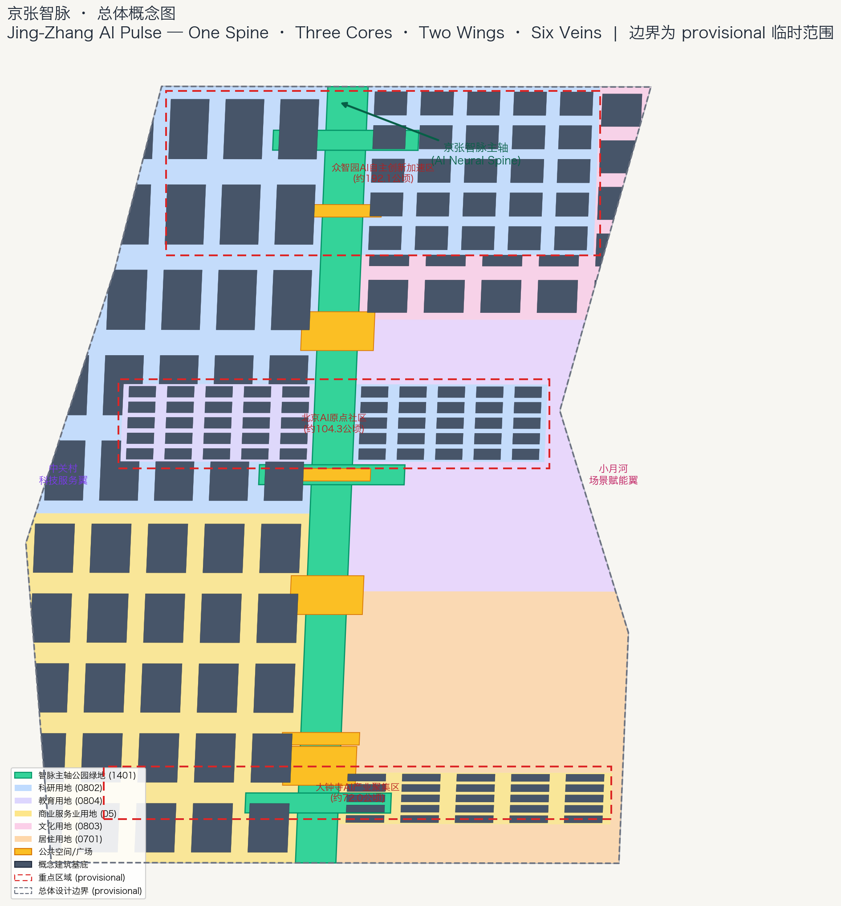
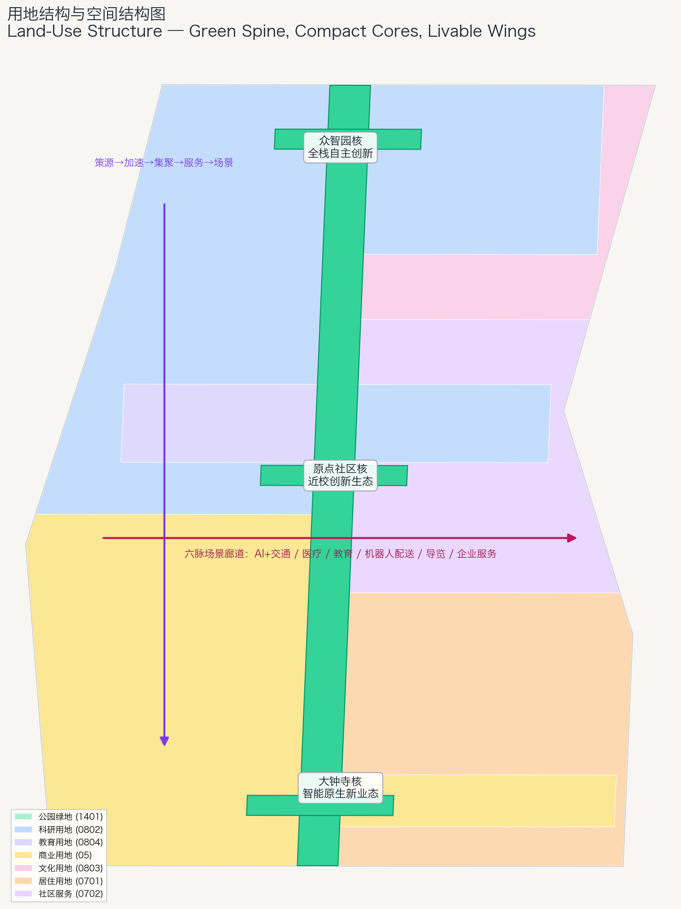
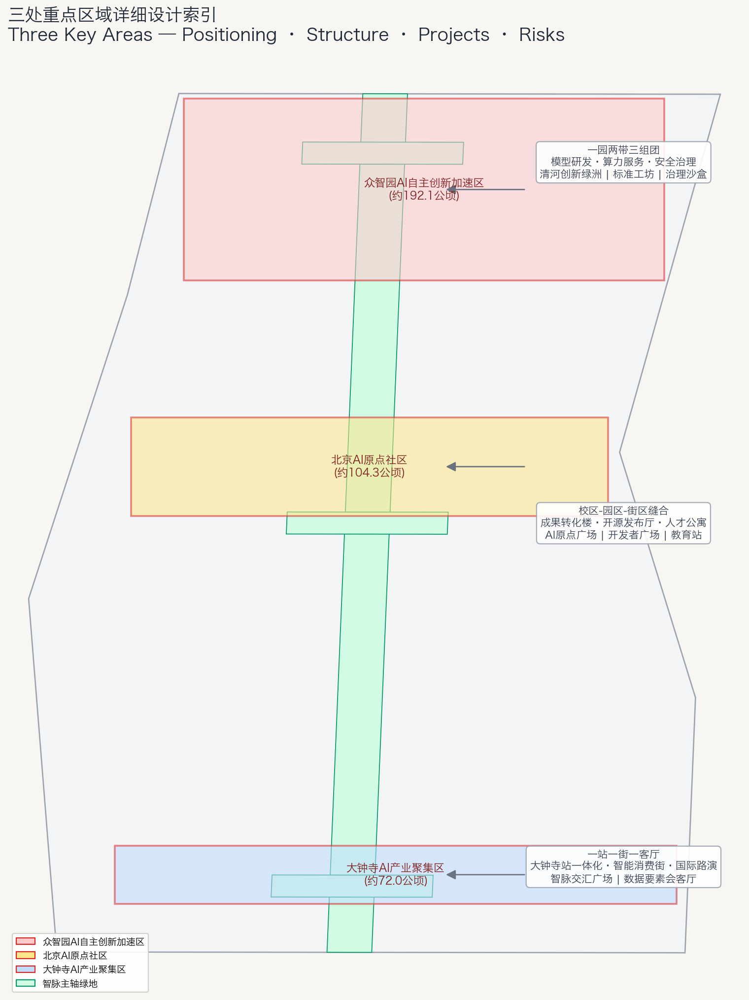
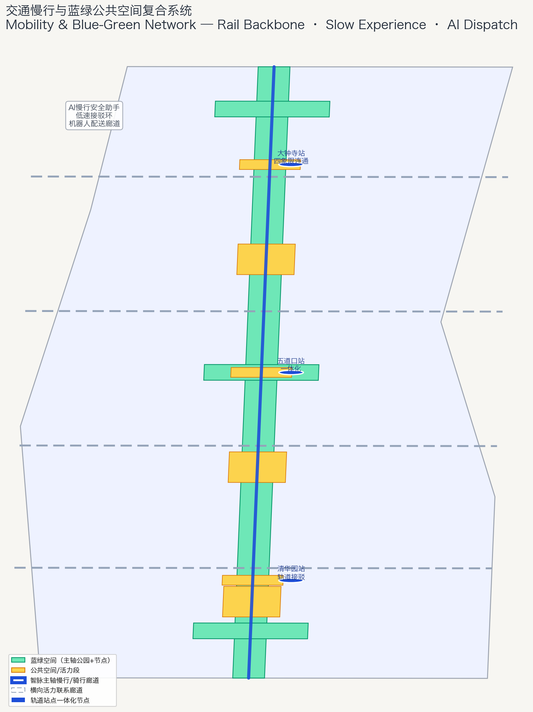

Jing-Zhang AI Pulse: From a Century-Old Steel Track to a Future Neural Track — Open Urban Design Proposal for the Centennial Jing-Zhang AI Innovation Belt
Using a 'One Spine, Three Cores, Two Wings, Six Veins' spatial framework, this proposal reinterprets the century-old Jing-Zhang railway as an AI neural spine: the steel track becomes a pulse line, and the 'ren' (person) character becomes human-centric AI. Around the Zhongzhiyuan, AI Origin Community and Dazhongsi cores plus the Zhongguancun service wing and Xiaoyuehe scenario wing, it proposes 12 scenario cards, 8 ecosystem cases, 4 pilgrimage landmarks and a global AI innovation operation system.
Jing-Zhang AI Pulse: From a Century-Old Steel Track to a Future Neural Track
Design Basis and Source List
This proposal is based on the Pre-qualification Announcement for the International Urban Design Call for the Centennial Jing-Zhang AI Innovation Belt issued by the Haidian Branch of the Beijing Municipal Commission of Planning and Natural Resources [source:OFFICIAL-ANNOUNCEMENT], the machine-readable site package under brief/site-package/ [source:SITE-PACKAGE], and the source registry and processed fact pack [source:SOURCE-REGISTRY] [source:PROCESSED-FACT-PACK]. The agent-facing open-call taskbook [source:AGENT-TASKBOOK] defines the three positionings, five functions, three-areas-two-wings layout, six agent tasks and unified boundary clauses that this proposal responds to [standard:PROJECT-AGENT-OPEN-CALL-TASKBOOK].
This proposal is a conceptual, forward-looking, discussable open urban design suggestion. It is not a statutory plan and does not constitute an approved government conclusion. All spatial implementation suggestions are worded as conceptual suggestions, reference schemes, or material for professional teams to deepen [standard:MOHURD-CONTROL-DETAILED-PLANNING].
Boundary status: since no official precise redline is available in the repository, this proposal uses the provisional boundaries from brief/site-package/geometry/provisional_boundaries.geojson (SITE-001, PROV-KEY-001/002/003) [source:BOUNDARY-SOURCE] [source:KEY-AREA-SOURCE]. Provisional geometry is for generation, visualization and intake self-check only; it must not be used as an official redline, approval basis or precise area basis [data:geometry/site_boundary.geojson#SITE-001] [data:geometry/key_areas.geojson#PROV-KEY-001]. The organizer's data gap does not block content scoring; all layers and metrics must be recomputed when official polygons are released [metric:site_area_sqm].
Professional standards used include the Urban Design Administration Measures [standard:MOHURD-URBAN-DESIGN-MEASURES], the National Land Use Classification Guide [standard:MNR-LAND-USE-CLASSIFICATION-GUIDE], and the 2016 Architectural Design Depth Regulation as a depth reference only [standard:MOHURD-ARCH-DESIGN-DEPTH-2016].

Three-Level Scope Framework
The announcement defines three working levels [standard:PROJECT-OFFICIAL-ANNOUNCEMENT]:
| Level | Announced area | Working objective | Design depth | | --- | --- | --- | --- | | Coordinated research area | about 43.6 km² | AI ecosystem, future city form, three-areas-two-wings synergy | strategy and ecosystem research | | Overall design area | about 11.4 km² | renewal framework, spatial structure, industry layout, facilities | regulatory-plan-level urban design | | Key detailed design area | about 368.4 ha | detailed design of Zhongzhiyuan / AI Origin / Dazhongsi | comprehensive implementation plan depth |
The overall concept is the **"Jing-Zhang AI Pulse" (JZ-Pulse)**: reimagining the century-old Jing-Zhang railway as an AI neural spine that carries computing power, talent, scenarios and innovation energy. A century ago Zhan Tianyou used a "ren"-shaped (人) track alignment to climb the Badaling mountains; today we use a "ren"-shaped urban design to help AI climb the mountain of application. The resulting structure is "One Spine, Three Cores, Two Wings, Six Veins" [depth:overall_spatial_structure]:
- **One Spine**: the Jing-Zhang AI Pulse main spine along the railway heritage park, a north-south cultural-scenario-innovation corridor [data:geometry/green_space.geojson#GREEN-SPINE].
- **Three Cores**: Zhongzhiyuan AI Self-Reliance Acceleration Area (north), Beijing AI Origin Community (middle), Dazhongsi AI Industry Cluster (south) [data:geometry/key_areas.geojson#PROV-KEY-001] [data:geometry/key_areas.geojson#PROV-KEY-002] [data:geometry/key_areas.geojson#PROV-KEY-003].
- **Two Wings**: Zhongguancun Technology Service Wing (west) and Xiaoyuehe Scenario Empowerment Wing (east).
- **Six Veins**: six AI scenario corridors — AI+transport, AI+health, AI+education, robot delivery, AI guide, enterprise services [data:geometry/roads.geojson#ROAD-SPINE].

Coordinated Research Area: Industry and Future City Research
Three positionings, five functions and the three-cores-two-wings loop
The three positionings are mapped onto space: the Centennial Jing-Zhang Culture Belt along the heritage spine; the Urban AI Life Experience Belt along the Xiaoyuehe wing; and the AI Integration Innovation Belt along the Zhongguancun wing and the three cores.
The five functions correspond to five spatial mechanisms [source:AGENT-TASKBOOK]: (1) AI full-stack self-reliance system → Zhongzhiyuan core; (2) world-class AI innovation ecosystem → AI Origin community; (3) AI+ scenario empowerment paradigm → Xiaoyuehe wing; (4) intelligent vibrant AI city → spine public space; (5) global voice in AI governance → governance nodes and the global event system. The loop "origin – acceleration – clustering – services – scenarios" is organized along the spine [data:geometry/land_use.geojson#LU-0802].
8 global AI innovation ecosystem cases
1. Jurong Innovation District (Singapore): government-industry-academia co-building, public space for innovation exchange. 2. King's Cross (London): railway heritage revitalization, knowledge-economy blocks, phased renewal. 3. Kista (Stockholm): telecom and AI cluster, university-park linkage. 4. Pangyo Techno Valley (Korea): government-led AI cluster, startup-corporate ecosystem. 5. Austin Innovation District (USA): university-industry-capital triangle, talent livability. 6. Adlershof (Berlin): science park fused with urban blocks, experiment-display-residence integration. 7. Hangzhou Future Sci-Tech City (China): scenario opening, platform-driven, talent policy. 8. Nanshan Science Park (Shenzhen, China): hardware+software ecology, compact high-density innovation blocks.
Transferable mechanisms — heritage activation (case 2), public space for innovation exchange (1, 6), university-industry-capital loop (3, 5), scenario opening and platform drive (7, 8), compact innovation blocks (4, 8) — are placed into the spine public space, the Origin community, the three cores and the Dazhongsi compact blocks [data:geometry/buildings.geojson#BLDG-001].
Future AI city form
The "human-centric AI pulse" city form: the city is AI's testbed, showcase and living place, while AI is the city's infrastructure and public good: edge computing fused with public services [depth:municipal_new_infrastructure]; AI transport fused with slow mobility [depth:traffic_rail_slow_parking]; continuous green space fused with AI scenario nodes [depth:blue_green_public_space]; cultural narrative fused with tech narrative [standard:MOHURD-URBAN-DESIGN-MEASURES].
Overall Design Area: Urban Renewal and Regulatory-Plan-Level Urban Design
Spatial structure: One Spine, Three Cores, Two Wings, Six Veins
The overall design area (about 11.4 km² [metric:site_area_sqm]) is organized as: the main spine connecting Qinghuayuan station, Wudaokou and Dazhongsi [data:geometry/roads.geojson#ROAD-SPINE]; three cores — Zhongzhiyuan (research 0802), Origin (education 0804 + research 0802), Dazhongsi (commercial 05) [data:geometry/land_use.geojson#LU-0802] [data:geometry/land_use.geojson#LU-0804] [data:geometry/land_use.geojson#LU-05]; two wings — Zhongguancun service (west, commercial/research mix) and Xiaoyuehe scenario (east, culture 0803 + residential 0701 + community 0702) [data:geometry/land_use.geojson#LU-0803] [data:geometry/land_use.geojson#LU-0701]; six veins along the spine and cross streets [data:geometry/roads.geojson#ROAD-L1].
Land use follows "green spine + compact innovation cores + livable wings": park green (1401) forms the continuous green skeleton along the spine [metric:green_ratio]; research/education/commercial concentrate in the cores and west wing; residential and community services sit in the east wing [depth:land_use_layout].
Urban renewal framework
"Preserve cultural genes, renovate inefficient spaces, update functional interfaces, build new innovation carriers, reserve flexible land": preserve the railway heritage and Qinghuayuan station [data:geometry/constraints.geojson#CONST-HERITAGE]; renovate inefficient buildings along the spine and cores [depth:retain_renovate_demolish]; update traditional commerce in Dazhongsi toward AI-native formats [data:geometry/land_use.geojson#LU-05]; build full-stack carriers in Zhongzhiyuan and transformation spaces in the Origin community [data:geometry/buildings.geojson#BLDG-001]; reserve flexible land in the southeast [data:geometry/land_use.geojson#LU-0702].
Density and height: before official regulatory conditions are released, this proposal gives no FAR or height conclusions, only a gradient principle — moderate along the spine, compact in the cores, livable in the wings — listed as pending controls [depth:development_intensity_controls] [depth:height_massing_character] [metric:floor_area_ratio].

Detailed Design of Key Areas
Zhongzhiyuan AI Self-Reliance Acceleration Area (about 192.1 ha)
Positioning: the "brain core" of full-stack AI self-reliance and governance [data:geometry/key_areas.geojson#PROV-KEY-001]. Structure: one park, two belts (Qinghe innovation belt, spine belt), three clusters (model R&D, computing services, safety governance). Research land (0802) with R&D buildings, computing center, test fields and governance exhibition [data:geometry/buildings.geojson#BLDG-001]. Mobility via the Qinghe interface and internal slow streets [data:geometry/roads.geojson#ROAD-L1]. Green node: Qinghe Innovation Oasis [data:geometry/green_space.geojson#GREEN-NODE2]. AI scenarios: model test field, standard workshops, safety governance sandbox. Risks: Qinghe blue line, flood and ecology conditions to be confirmed [data:geometry/constraints.geojson#CONST-HERITAGE].
Beijing AI Origin Community (about 104.3 ha)
Positioning: the "heart core" of near-campus transformation and world-class AI ecosystem [data:geometry/key_areas.geojson#PROV-KEY-002]. Structure: campus-park-block stitching forming a one-kilometer near-campus innovation circle. Education (0804) and research (0802) land with transformation buildings, open-source halls and talent housing [data:geometry/land_use.geojson#LU-0804]. Mobility: stitching campus-park slow-mobility gaps and transit-oriented stations [data:geometry/roads.geojson#ROAD-L2]. Public space: Qinghuayuan AI Origin Plaza and Developer Exchange Plaza [data:geometry/public_space.geojson#PUBLIC-S1] [data:geometry/public_space.geojson#PUBLIC-S2]. AI scenarios: open-source hall, near-campus transformation street, AI education stations. Risks: campus boundaries, ownership and ground-floor uses to be confirmed [data:geometry/buildings.geojson#BLDG-001].
Dazhongsi AI Industry Cluster (about 72.0 ha)
Positioning: the "industry core" of AI-native new formats and international exchange [data:geometry/key_areas.geojson#PROV-KEY-003]. Structure: one station (Dazhongsi transit hub), one street (intelligent consumption), one living room (international roadshow). Commercial land (05) hosting agent, terminal, content and data enterprises [data:geometry/land_use.geojson#LU-05]. Mobility: four-quadrant pedestrian connectivity around Dazhongsi station [data:geometry/roads.geojson#ROAD-L3]. Public space: AI Pulse Confluence Plaza and Green Living Room [data:geometry/public_space.geojson#PUBLIC-S3] [data:geometry/green_space.geojson#GREEN-NODE3]. AI scenarios: international roadshow living room, data-element parlor, intelligent terminal experience street. Risks: station renovation, utilities and green-space co-use need professional deepening [data:geometry/constraints.geojson#CONST-HERITAGE].
AI Innovation Ecosystem, Personas, and AI+ Scenarios
Six user personas
| Persona | Typical needs | Spatial response | Privacy boundary | | --- | --- | --- | --- | | Open-source developer | release, collaboration, testing, reputation | Origin open-source hall, developer plaza, code wall | no personal behavior tracking; aggregated activity data only | | Startup team | low-cost office, computing entry, testbed | Zhongzhiyuan shared test field, edge computing station | computing/data services require separate authorization | | University faculty and students | transformation, cross-campus collaboration, daily mobility | campus-park stitching, transformation stations, AI education | campus data and research results require authorization | | Head-enterprise visitors | exhibition, business, international reception | Dazhongsi roadshow living room, transit connection | enterprise marks and cases must be cleared | | Nearby residents | commute, leisure, low-disturbance renewal | heritage park slow loop, embedded community services | no commercial profiling of residents | | International visitors | culture, AI pilgrimage, communication | spine guide, landmarks, global events | minimal data collection |
12 AI scenario cards (4 marked ★ are industry test/validation scenarios)
| # | Scenario card | Spatial carrier | Users | Data/privacy boundary | Suggested operator | | --- | --- | --- | --- | --- | --- | | 01 | Jing-Zhang culture digital guide ★ | main spine [data:geometry/roads.geojson#ROAD-SPINE] | international visitors, residents | public culture and map data only | park operator + developer community | | 02 | AI slow-mobility safety assistant ★ | spine trail [data:geometry/public_space.geojson#PUBLIC-SEG1] | commuters, elders, children | no individual recognition; aggregated heatmaps | transport authority + AI firms | | 03 | Low-speed autonomous shuttle ★ | core loop [data:geometry/roads.geojson#ROAD-SPINE] | developers, visitors | test permits, safety operators, de-identified data | park operator + AV firms | | 04 | Robot delivery pilot ★ | Zhongzhiyuan/Origin [data:geometry/buildings.geojson#BLDG-001] | park users | public routes; no parcel content collection | operator + robotics firms | | 05 | Open-source release hall | Origin [data:geometry/public_space.geojson#PUBLIC-S2] | developers | public contribution data; traceable honor | open-source community + park | | 06 | Edge computing station | spine nodes [data:geometry/land_use.geojson#LU-0702] | startups, residents | service authorization; public energy use | operator + computing provider | | 07 | AI health service navigation | east living belt [data:geometry/land_use.geojson#LU-0701] | residents, elders | medical data stays in-domain; human review | health authority + medical institutions | | 08 | AI education experience station | Origin [data:geometry/land_use.geojson#LU-0804] | students, teachers | campus data authorization; minor protection | education authority + universities | | 09 | Enterprise service agent | west service wing [data:geometry/land_use.geojson#LU-05] | enterprises, founders | enterprise data authorization; compliance audit | Zhongguancun service system | | 10 | Data-element parlor | Dazhongsi [data:geometry/land_use.geojson#LU-05] | data firms | authorization, auditability, privacy computing | data exchange + park | | 11 | City agent governance sandbox | Zhongzhiyuan [data:geometry/land_use.geojson#LU-0802] | governance bodies, developers | simulated data first; human review | city governance + universities | | 12 | Youth third space | spine activity segment [data:geometry/public_space.geojson#PUBLIC-SEG3] | youth, founders | aggregated activity data; no personal tracking | community + commercial operator |
All scenarios follow data minimization, public sources, explainability and human review; surveillance-heavy or non-reviewable scenarios are prohibited [depth:risk_missing_data].
Land Use, Building Scale, and Retain-Renovate-Demolish Strategy
Land use follows [standard:MNR-LAND-USE-CLASSIFICATION-GUIDE]; geometry/land_use.geojson fully covers the boundary without gaps or overlaps [data:geometry/land_use.geojson#LU-1401], including park green (1401), research (0802), education (0804), commercial (05), culture (0803), residential (0701) and community services (0702), mapped to [metric:land_use_area_sqm]. Building footprints are conceptual innovation carriers [data:geometry/buildings.geojson#BLDG-001] totaling about [metric:building_footprint_area_sqm] sqm. The retain-renovate-demolish principle is "preserve culture, renovate inefficiency, update old, build new cores, reserve flexibility"; parcel-level conclusions await official regulatory, ownership and engineering conditions [depth:retain_renovate_demolish] [depth:development_intensity_controls].
Transport, Rail, Municipal Infrastructure, and Public Services
Transport strategy: "rail as backbone, slow mobility as experience, AI as dispatch" [depth:traffic_rail_slow_parking]. The main spine is a continuous slow+cycling+AI-guide corridor [data:geometry/roads.geojson#ROAD-SPINE]; four cross streets link cores and wings [data:geometry/roads.geojson#ROAD-L1] [data:geometry/roads.geojson#ROAD-L2] [data:geometry/roads.geojson#ROAD-L3] [data:geometry/roads.geojson#ROAD-L4]; station-area integration at Wudaokou and Dazhongsi repairs slow-mobility gaps [data:geometry/public_space.geojson#PUBLIC-S1]; parking and bike sharing are organized around stations, and the spine is car-free [data:geometry/green_space.geojson#GREEN-SPINE]. Municipal and new infrastructure cover innovation service platforms, talent services, distributed energy, edge computing and conventional utilities [depth:municipal_new_infrastructure]; missing utility, energy, flood and fire data are listed as preconditions [data:geometry/constraints.geojson#CONST-HERITAGE].

Blue-Green Network, Public Space, and Urban Character
The Jing-Zhang AI Pulse spine park is the green skeleton [data:geometry/green_space.geojson#GREEN-SPINE], coordinating the Qinghe, Xiaoyuehe and heritage park into a north-south, east-west walking and cycling system [metric:green_ratio] [metric:public_space_ratio]. Three green nodes and three plazas form the public-space network [data:geometry/green_space.geojson#GREEN-NODE1] [data:geometry/public_space.geojson#PUBLIC-S2].
AI pilgrimage landmarks (4)
1. Qinghuayuan AI Origin Memorial Station [data:geometry/public_space.geojson#PUBLIC-S1]: from Zhan Tianyou's railway origin to the AI origin. 2. Developer Trail and Open-Source Contribution Honor Wall [data:geometry/roads.geojson#ROAD-SPINE]: memorable contributions [source:AGENT-TASKBOOK]. 3. Zhongzhiyuan Full-Stack Self-Reliance Lighthouse [data:geometry/land_use.geojson#LU-0802]: full-stack autonomy and governance voice. 4. Dazhongsi AI Pulse Confluence Plaza [data:geometry/public_space.geojson#PUBLIC-S3]: AI-native formats and international exchange.
All landmarks, logos, fonts, images, portraits and enterprise marks must be rights-cleared; landmarks are conceptual suggestions, not approved construction [depth:blue_green_public_space].
Urban character fuses "railway grey, brick red, tech blue, ecology green". The narrative is "from the 'ren'-shaped railway to the human-centric AI city": the "ren" character was Zhan Tianyou's code for Chinese self-reliance; today it is the ethical declaration of human-centric AI. Three cultural chapters unfold along the spine — Centennial Jing-Zhang (heritage), Zhongguancun Innovation, and AI New Culture [depth:overall_spatial_structure].
Renewal Projects, Implementation Policy, and Phasing
Ten renewal projects are listed (JZ-01 to JZ-10) covering the spine, memorial station, Qinghe interface, near-campus street, Dazhongsi station connectivity, service-wing upgrade, scenario-wing build-out, developer trail, AI public-service nodes and reserved land, with dependencies and phasing [depth:renewal_project_list] [depth:phasing_implementation]. Phasing: P1 cores first [data:geometry/phasing.geojson#PHASE-1], P2 wings linkage [data:geometry/phasing.geojson#PHASE-2], P3 full-area upgrade [data:geometry/phasing.geojson#PHASE-3].
For agent.6, the "Four Seasons of the AI Pulse" global event system [source:AGENT-TASKBOOK]: Spring Open-Source Week, Summer Scenario Season (quarterly open days), Autumn Innovation Congress (international forum, roadshow, governance dialogue), Winter Pilgrimage Tour (culture guide, contributor ceremony, year-end release). Operation mechanisms cover developer community, scenario opening with data boundaries and human review, public experience routes, and international communication and attraction conversion. All events and investment arrangements are conceptual suggestions, not confirmed government arrangements.
Metrics, Area Recalculation, and Compliance Matrix
Core metrics [depth:metrics_recalculation]: site area [metric:site_area_sqm] sqm; green ratio [metric:green_ratio] from green space [data:geometry/green_space.geojson#GREEN-SPINE]; public space ratio [metric:public_space_ratio] from public space [data:geometry/public_space.geojson#PUBLIC-S2]; building footprint [metric:building_footprint_area_sqm] sqm; key area count [metric:key_area_count]; land-use coverage [metric:land_use_area_sqm] sqm; phasing coverage [metric:phasing_area_sqm] sqm; FAR [metric:floor_area_ratio] and height pending official controls. Areas are recomputed in EPSG:4548. compliance_matrix.json covers all announcement tasks 1.3/1.4/1.5 and agent.1–agent.6; standard_matrix.json covers all mandatory standards; design_depth_matrix.json covers the 15 core depth items.

Risk, Copyright, and Compliance
Only public or cleared data are used [source:SOURCE-REGISTRY]; all figures, icons and text are original or cited with sources, and logos, landmarks, fonts and images must be rights-cleared before deepening (see report/copyright_statement.md); the proposal is AI-generated and the author is responsible for facts, citations, copyright and expression [source:AGENT-TASKBOOK]; no claim of official approval, approved regulatory plan, final ownership or guaranteed implementation [standard:MOHURD-CONTROL-DETAILED-PLANNING]; pending data — official redline, key-area polygons, regulatory controls, road redlines, ownership, utilities, heritage control lines — are listed in assumptions.json and missing_data_checklist.csv [depth:risk_missing_data] [data:geometry/constraints.geojson#CONST-HERITAGE].
References
brief/site-package/design_brief.jsonbrief/site-package/agent_taskbook.jsonbrief/site-package/allowed_design_space.jsonbrief/site-package/sources.jsonbrief/site-package/enums/brief/site-package/ranges/planning_limits.jsonbrief/site-package/geometry/provisional_boundaries.geojsonbrief/site-package/standards/standards.jsondata/source_registry.jsondata/processed/agent_fact_pack.mddocs/formal-submission-guide.md- Pre-qualification Announcement for the International Urban Design Call for the Centennial Jing-Zhang AI Innovation Belt (Haidian Branch, Beijing Municipal Commission of Planning and Natural Resources)